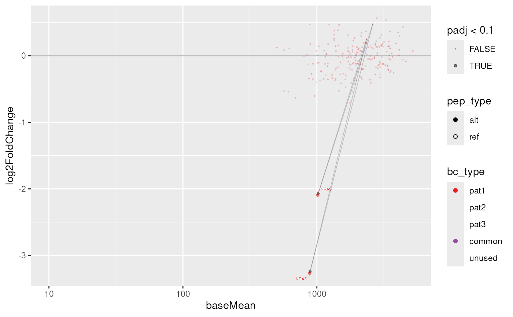

This guide shows how to calculate differential construct abundance
and visualize the results. To calculate changes in barcode abundance, we
use the DESeq2 package, commonly used in differential
expression analysis. Finally, we provide a utility function to visualize
the results as an MA-plot (base abundance on the x axis, log2 fold
change on the y axis).
Preparation
In order to perform this analysis, we need the
SummarizedExperiment (dset) object from the
Quality Control results, and we need to know which comparisons
we want to perform.
From the Quality Control step, we know that we have two
repeats each of Mock and Sample for a
patient-specific (pat1) and a common library
(common). These two repeats are important, as we need to
estimate within-condition variability as well as between-condition
variability.
However, we need to make sure to perform the screen analysis only on relevant samples, otherwise the model may mis-estimate the variability:
dset = dset[,grepl("pat1", dset$patient)]
colData(dset)
#> DataFrame with 4 rows and 10 columns
#> sample_id patient rep origin barcode total_reads
#> <character> <factor> <numeric> <character> <character> <numeric>
#> mock1 mock1 pat1+common 1 Mock TGAGTCC 224687
#> mock2 mock2 pat1+common 2 Mock CAAGATG 223935
#> screen1 screen1 pat1+common 1 Sample AACCGAC 454355
#> screen2 screen2 pat1+common 2 Sample AGAATCG 450164
#> mapped_reads smp short label
#> <numeric> <character> <character> <character>
#> mock1 224687 Mock-1 pat1+common Mock-1 pat1+common Mock-1 (..
#> mock2 223935 Mock-2 pat1+common Mock-2 pat1+common Mock-2 (..
#> screen1 454355 Sample-1 pat1+common Sample-1 pat1+common Sample-1..
#> screen2 450164 Sample-2 pat1+common Sample-2 pat1+common Sample-2..Calculating differential abundance
When we want to perform a comparison between two conditions, we refer
in this comparison to the origin column of the sample
sheet. In our case, we have the origin Mock and
Sample, which describe an experiment of mock-transfected
and co-cultured cells and cells transfected with the actualy construct
library, respectively.
Hence, our comparison here is that we want to see the changes of
Sample over the Mock condition, which we
indicate as a character vector of c(sample, reference) or a
list thereof.
In case of a single comparison (character vector), a
data.frame will be returned. If there are more comparisons
supplied in a list of character vectors, the result will be a list of
data.frames:
res = screen_calc(dset, list(c("Sample", "Mock")))
#> converting counts to integer mode
#> Warning in DESeq2::DESeqDataSet(dset, ~rep + origin): some variables in design
#> formula are characters, converting to factors
#> the design formula contains one or more numeric variables with integer values,
#> specifying a model with increasing fold change for higher values.
#> did you mean for this to be a factor? if so, first convert
#> this variable to a factor using the factor() function
#> using pre-existing size factors
#> estimating dispersions
#> gene-wise dispersion estimates
#> mean-dispersion relationship
#> final dispersion estimates
#> fitting model and testing
#> Joining with `by = join_by(barcode)`The result will look like the following:
res[[1]]
#> # A tibble: 212 × 19
#> barcode baseMean log2FoldChange lfcSE stat pvalue padj bc_type var_id
#> <chr> <dbl> <dbl> <dbl> <dbl> <dbl> <dbl> <fct> <chr>
#> 1 AACAAC… 884. -3.27 0.300 -10.9 1.63e-27 3.45e-25 pat1 chr1:…
#> 2 AACACC… 1015. -2.09 0.352 -5.94 2.80e- 9 2.97e- 7 pat1 chr1:…
#> 3 AACAAC… 1766. -0.708 0.239 -2.96 3.09e- 3 2.19e- 1 pat1 chr7:…
#> 4 AACGCG… 2802. 0.565 0.236 2.40 1.66e- 2 8.13e- 1 common chr18…
#> 5 AACAAC… 961. -0.605 0.261 -2.31 2.07e- 2 8.13e- 1 pat1 chr7:…
#> 6 AACAAC… 693. -0.633 0.278 -2.27 2.30e- 2 8.13e- 1 pat1 chr2:…
#> 7 AACGCT… 1838. -0.534 0.244 -2.19 2.87e- 2 8.59e- 1 common CD74-…
#> 8 AACAGT… 1463. -0.527 0.246 -2.14 3.24e- 2 8.59e- 1 pat1 RET--…
#> 9 AACGCG… 1638. -0.472 0.242 -1.95 5.09e- 2 9.27e- 1 common chr18…
#> 10 AACGAC… 613. -0.540 0.285 -1.89 5.86e- 2 9.27e- 1 common chr7:…
#> # ℹ 202 more rows
#> # ℹ 10 more variables: mut_id <chr>, pep_id <chr>, pep_type <chr>,
#> # gene_name <chr>, gene_id <chr>, tx_id <chr>, tiled <chr>, n_tiles <dbl>,
#> # nt <dbl>, peptide <chr>Plotting the screen results
We can plot the result of this differential abundance analysis using
the plot_screen function. The only argument we need supply
is a results table, but we can fine-tune the plot with the following
additional arguments:
-
sample– which library (or libraries) to plot (default: all) -
links– whether to draw arrows between ref and significant alt peptides -
labs– whether to label constructs in less dense areas of the plot -
cap_fc– a maximum (and negative minimum) fold change value to bound data points to
plot_screen(res$`Sample vs Mock`)
#> Joining with `by = join_by(bc_type, mut_id)`
#> Registered S3 methods overwritten by 'ggpp': method from
#> heightDetails.titleGrob ggplot2 widthDetails.titleGrob ggplot2
#> Loading required package: ggplot2
As with the Quality Control plots already, we can also
create and interactive plot. This will not display links between
ref and alt peptides, but instead highlight a
contruct group (by mut_id) when interacting with a data
point.